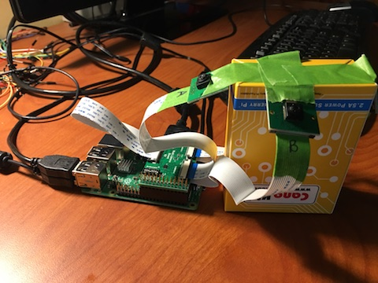
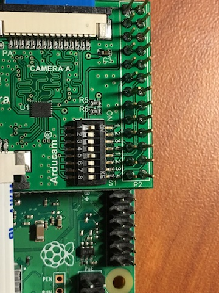

Multiple cameras with a single Raspberry Pi
Posted on Sun 02 September 2018 in Python
The Arducam Multi Camera Adapter board is a neat accessory for a Raspberry Pi. With it, you can connect multiple cameras to a single Pi. A single board supports up to four cameras. According to Arducam, you can stack up to four boards for a total of 16 cameras on a single Pi.

I had a chance to use a couple of these boards in a recent project. Our goal was to capture multiple images to form an image mosaic. My setup included a Raspberry Pi 3B+, two of the Arducam multicamera boards, and six cameras. (Only the 5MP v1 Pi cameras, or Arducam's 5MP camera are supported, not the 8MP v2 camera.)
Since Arducam's documentation is sparse, I thought I'd share my experiences with this adapter as well as a Python library I wrote that simplifies accessing each of the cameras.
First, you should know that you cannot capture the images simultaneously. The adapter works by enabling one camera at a time. So, you can take photos one after the other, but there will be a small delay between each. Arducam does not specify how long it takes to switch between cameras. Our code pauses for 0.1 second between photos though we could probably wait less time than that.
Hardware setup
Let's start with the hardware side. The adapter board will use 26 of the GPIO pins of the Pi, leaving you the last 14 pins free for other purposes. You will connect the Pi's camera port (called the CSI port) to the adapter board with a ribbon cable. Then, you'll connect the CSI cable from each of your cameras to the ports on the adapter.
Key hardware setup points:
- Connect the Arducam board starting with GPIO pin 1
- Connect the Pi's CSI port to the Arducam board, pin side of the ribbon towards the board (blue/tape side up)
- Connect camera CSI cables to the Arducam board, pin side of the ribbon towards the board (blue/tape side up)
- It does not matter whether you connect the cameras in order (to port A, then B, etc.) though it will matter for your code
Stacking multiple boards
How about stacking multiple boards? You'll need to solder on the 10-pin connector that Arducam supplies to each of the adapters. These are the high-speed MSI bus over which the camera data is transferred between boards. Because of this connector, the bottom adapter didn't sit straight on my Pi3B+ since the connector hits the HDMI connector.
You'll need to set DIP switches on the boards to identify which of the OE (output enable) pins that board will use. For board 1, switches 1 and 5 must be on and the rest off. For board 2, switches 2 and 6 are on. See the Arducam site for the full list.

Pictures on the Amazon listing for the adapter shows the CSI cable going between the bottom board to the Pi. In their emails to me, Arducam suggested connecting the ribbon cable to the top-most board. (It made no difference for me where it was connected.)
Software
With that hardware setup out of the way, let's move onto the software side of things.
Channels and ports
The adapter enables multiple camera support by providing two channels, each with two camera ports. You select which camera to use by enabling one of the channels and one of the camera ports. You do so by setting certain GPIO pins high or low.
Arducam calls these the channel select (CS) and output enable (OE) pins. All of the stacked boards share the same CS pin but have their own OE pins (hence the DIP switches you must set). There's a listing of which pins you must set on the Arducam site, though my library hides that complexity.
Caveat
I must point out that I couldn't get stacked adapters to work. Even after multiple emails back and forth with Arducam, connecting a second adapter would cause my Pi to crash as soon as I tried accessing any camera. So, while my library supports up to 16 cameras, I can only be sure it works with four.
The multicam library
I have not published the library to PyPI (and probably won't). Instead, I've put it on a GitHub Gist. Using it is pretty simple, though it has a couple of dependencies.
- RPi.GPIO - installed by default in Raspbian Stretch (full version)
- PiCamera - install with
pip install picamera
Because my project used OpenCV, by default, my library returns captured photos as an OpenCV "BGR" formatted blob. You can pass the image_format param to the capture method if you want to use another format. Any format supported by PiCamera's capture method will work.
OpenCV is not installed by default, check out PyImageSearch's tutorial for install instructions if you want to use OpenCV on your Pi.
Examples
Using OpenCV, a minimal example follows:
1 2 3 4 5 6 7 8 9 | import cv2
from multicam import Multicam
mcam = Multicam()
img = mcam.capture(cam='a')
cv2.imshow('Cam A', img)
cv2.waitKey(0)
mcam.cleanup()
|
Or, with Matplotlib, you just need to specify the rgb image format:
1 2 3 4 5 6 7 8 9 10 | from matplotlib import pyplot as plt
from multicam import Multicam
mcam = Multicam()
img = mcam.capture(cam='a', image_format='rgb')
plt.figure().canvas.set_window_title('Cam A')
plt.imshow(img)
plt.show()
mcam.cleanup()
|
Of course, you could do the above with a single camera. Where this library shines is of course accessing the other cameras:
1 2 3 4 5 6 7 8 9 10 11 | import cv2
from multicam import Multicam
mcam = Multicam()
cv2.imshow('Cam A', mcam.capture(cam='a'))
cv2.imshow('Cam B', mcam.capture(cam='b'))
cv2.imshow('Cam C', mcam.capture(cam='c'))
cv2.imshow('Cam D', mcam.capture(cam='d'))
cv2.waitKey(0)
mcam.cleanup()
|
There's no need to worry about setting GPIO pins, selecting channels, etc. The library does all that for you. If you have multiple adapters stacked, you can keep going (up to camera 16, or "p")
1 2 3 4 5 6 7 8 9 10 11 | import cv2
from multicam import Multicam
mcam = Multicam()
# Camera 5
cv2.imshow('Cam E', mcam.capture(cam='e'))
# Camera 16
cv2.imshow('Cam P', mcam.capture(cam='p'))
cv2.waitKey(0)
mcam.cleanup()
|
Notes and miscellaneous
Each of the above examples ends with a call to cleanup. This releases the GPIO ports. You should always call this function at the end of your script to avoid errors if you re-run the script (without restarting the Pi).
By default, my library uses "board" port assignments. This means GPIO ports are accessed according to their physical pin number. This use matches the examples on the Arducam site.
However, some libraries, like gpiozero, are limited to using the Broadcom numbering scheme. If you're using such a library, you can tell the multicam library to use "bcm" numbering during initialization:
1 2 3 | from multicam import Multicam
mcam = Multicam(gpio_mode='bcm')
|
Conclusion
If you buy one of these boards, grab a copy of my multicam library to ease working with the cameras. Please comment on that Gist if you find issues. It's MIT licensed so free to use in any of your projects.